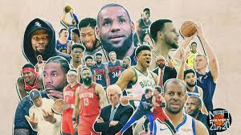
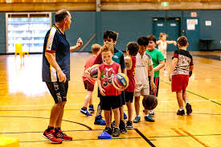

<!DOCTYPE html>
<html lang="en" dir="ltr">

</body>
</html>
  <head>


    </style>
      <link rel="stylesheet" href="css/layout.css">
    <meta charset="utf-8">
    <title>History of Basketball</title>
  </head>
  <body>

    <ul class="ul-nav">
      <li class="li-nav"><a class="active" href="index.html"<>Home</a></li>
      <li class="li-nav"><a href="about.html">About</a></li>
      <li class="li-nav"><a href="basketball.html">Basketball</a></li>
      <li class="li-nav"><a href="best work.html">Best Work</a></li>
      <li class="li-nav"><a href= HTML.html>HMTL</a></li>
    </ul>


  </body>
</html>

<hr>
<h2>History Of How Basketball Was Started</h2>

<p>The game of basketball as is is known today was
created by Dr.james Naismith in December 1891 input
springfield, massachusetts, to condition young
players during a cold month, it consisted of peach
basket and a soccer style ball, he published 13 rules
for the new game.</p>
<p>Basketball is a team sport. Two teams of five players each try to score by shooting a ball through a hoop elevated 10 feet above the ground. The game is played on a rectangular floor called the court, and there is a hoop at each end. The court is divided into two main sections by the mid-court line.</p>


<hr>
<h2>History Of How The NBA Was Made</h2>
<p> The NBA began life as the Basketball Association of
  america in 1949 and played under that monkier for 3 years before
  in 1949, mergin with National Basketball Association leage and changing
  the name to NBA...the NBA continued with 8 teams from 1955
  until1961 when the chicage packers joined the leage.</p>


<hr>
<h2>My Basketball Life </h2>
<p>I started playing when I was 7
how I started was first I started watching the NBA
and i just loved watching kobe Bryant, lebron james, vince carter, vince carter, Dirk Nowitzki
and many more but when i first picked up a basketball was when i was 7 my my Dad took me to the park
and gave me the ball and told me to shoot it after i made a basket a few time i started to really enjoy the sport,
was of today i play for Davenport West High School Basketball.
For the summer i play for two team one is called iowa raiders, and the second one is called QC elite
and i hope that i continue to play basketball in college like my brother and  try to make a living out of it.
</p>



<br><br><br><br>
<br><br><br><br>
<br><br><br><br>
<br><br><br><br>
<br><br><br><br>
<br><br><br><br>


<footer>
  <address class="">
    <strong> If you need me here is my Informationand if you need to contract me there's my numberif you need me call my number </strong> <br>
  : 3505 West Locust,. <br>
    Davenport, IA 52804. <br>
    email:	<a href="whitneydiontray23@gmail.com"></a> whitneydiontray23.com <br>
    phone:563-499-0202
  </address>
</footer>
